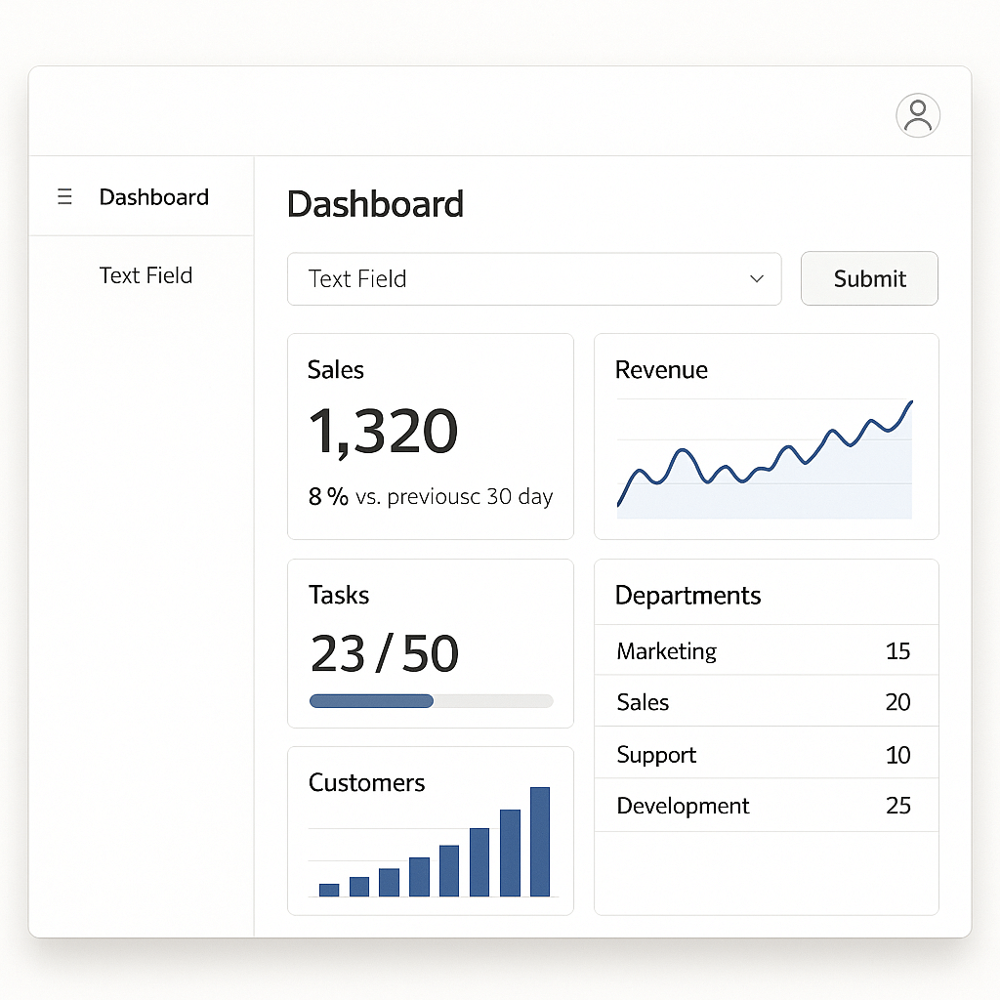
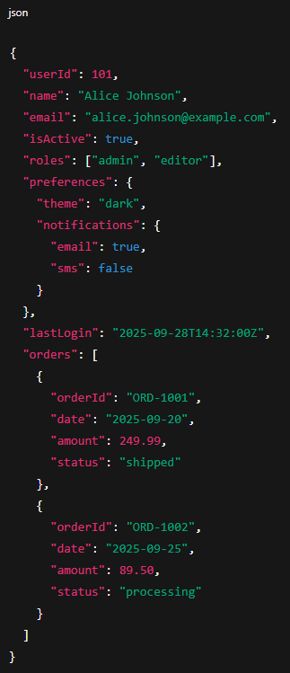
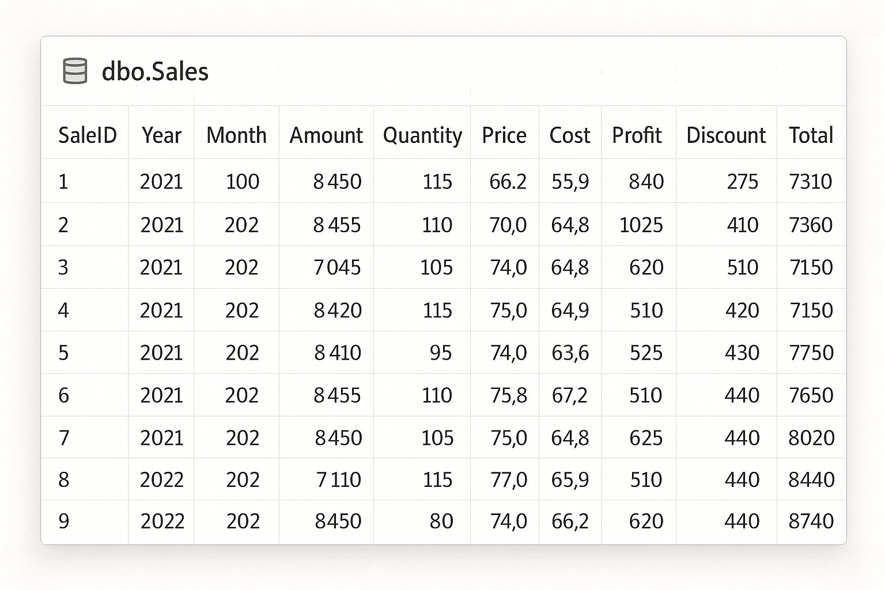
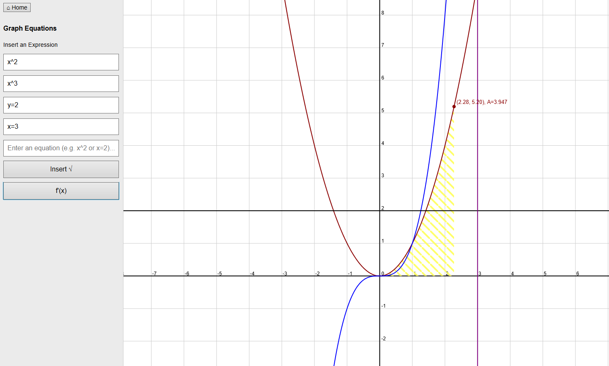

Python Algorithm
During an internship, I was tasked with building an automation solution to support internal testing workflows. I developed a Python script that processed JSON payloads, validated their data, and compared them against a database to identify matches. When matches were found, the algorithm appended them to the JSON payload for further use. The backend was written in Python, while the frontend was implemented in Oracle APEX. This project successfully reduced manual effort and improved testing efficiency.

I cannot show the actual production application due to confidentiality agreements, but the user interface was a typical form-driven web app that collected input, processed it through the backend algorithm, and returned results. Below is a placeholder example image of an Oracle APEX application.
To demonstrate the type of data my code worked with, here is a generic example of a JSON payload:
Revision Log
I worked on a full-stack web project involving C#, TypeScript, Angular, and SQL. The goal was to create an internal tool that allowed team members to log and track changes across different sections of a large management system. This tool was designed to improve efficiency by making it easier to search, create, and edit change records across the system.

Due to confidentiality agreements, I cannot disclose the exact implementation, but the tool displayed data from a database, allowed edits, and ensured changes were reflected immediately after saving.
On the frontend, I implemented responsive features using SCSS, TypeScript, and Angular.

Graphing Calculator
This project is a browser based graphing calculator in an attempt to replicate the abilities of the online graphic calculator Desmos. This project was done with JavaScript, HTML, and CSS using Math.js to parse and evualate equations. It has a side bar where the user can add and remove functions themselves. Each function has 1 of 4 distinct colors. The main graph is on an HTML5 canvas, which draws axes, grid lines, and the functions in real time. The user can zoom in and out, drag the graph, hover to see the exact coordinates on the graph, and it can calculate the area underneath the curve using the trapezoidal rule.
